Generate Lookup Table Data from Multi-Link Suspension
Using kinematic and compliance tests, we can generate the data necessary to replicate the kinematic and compliant behavior of a multi-link suspension. The script below shows how to exercise a multi-link suspension and process the simulation results to get the data required to parameterize a lookup-table based kinematic joint.
Copyright 2026 The MathWorks, Inc
Contents
- Open models and load vehicle data
- 1. Get motion ratio for damper, spring force (KnC Test)
- 2. Get damping force for verification (KnC Test)
- 3. Get anti-roll bar force for lookup tables (KnC Test)
- 4. Get toe, camber, long. def., lat def. for lookup tables (Jounce & Steer Sweep)
- 5. Load generated data into Vehicle dataset
- 6. Get damping force from LUT suspension for verification (KnC test)
- 7. Get spring force from LUT suspension for verification (KnC test)
- 8. Test LUT suspension on front axle of full vehicle
- 9. Test multi-link suspension on front axle of full vehicle
- 10. Compare results of full vehicle test
Open models and load vehicle data
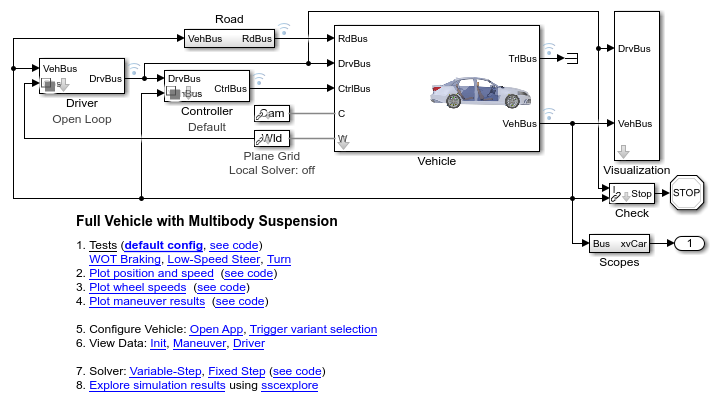
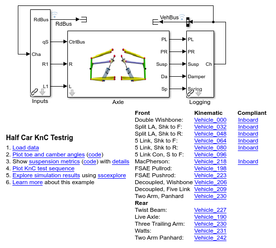
1. Get motion ratio for damper, spring force (KnC Test)
In this step, we run a standard KnC test and extract the results from the jounce-rebound sequence to get the motion ratio for the damper. The motion ratio for the damper is (speed of shock compression/vertical speed of wheel center). The damper is turned off so that the force of the spring is easier to measure.
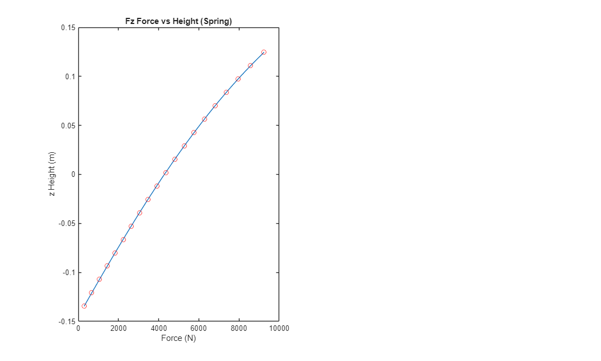
2. Get damping force for verification (KnC Test)
In this step, we run a standard KnC test and extract the results from the jounce-rebound sequence to get the force from the damper. We do not include this in the final set of parameters for the lookup table suspension, we use this to confirm that the damping in the lookup table suspension is comparable to the original suspension model.
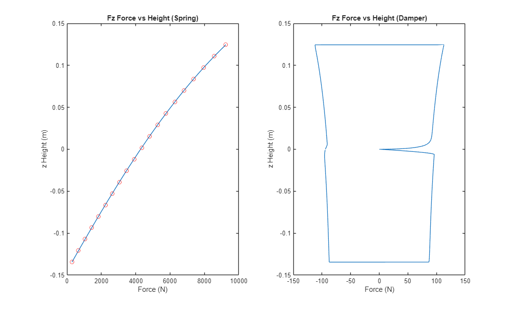
3. Get anti-roll bar force for lookup tables (KnC Test)
In this step, we run a standard KnC test and extract the results from the roll sequence to get the force only from the anti roll bar. For this test we turn off the spring and damper so that the only force the testrig has to overcome is due to the anti-roll bar.
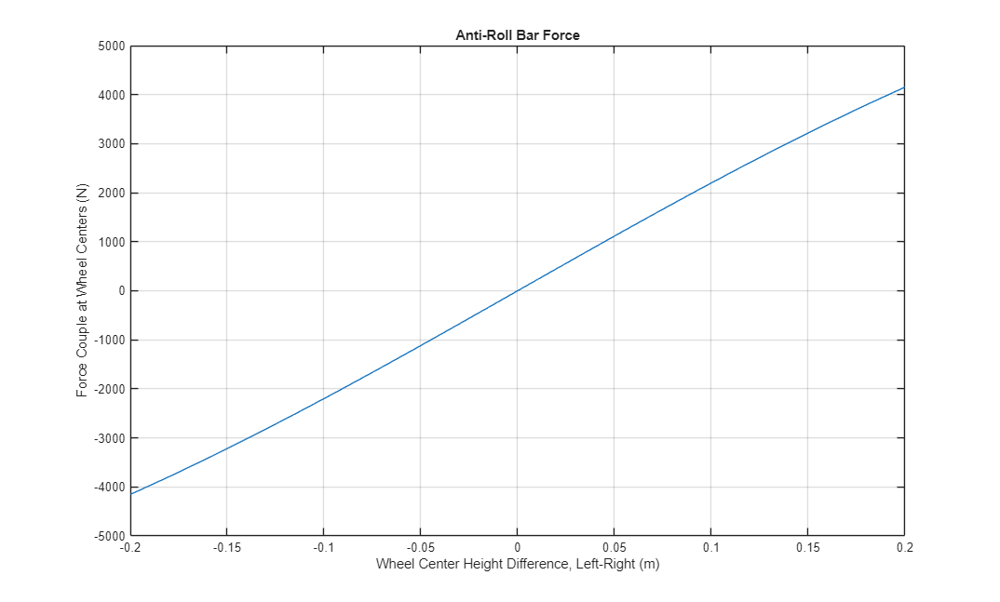
4. Get toe, camber, long. def., lat def. for lookup tables (Jounce & Steer Sweep)
In this step, we run a sweep over the entire motion envelope of the wheel so we can create the kinematic tables for the suspension motion. The wheel starts steered all the way to the left and moved all the way down. The following sequence is repeated until the entire steering range is covered:
- Move all the way up
- Increase steering slightly
- Move all the way down
- Increase steering slightly
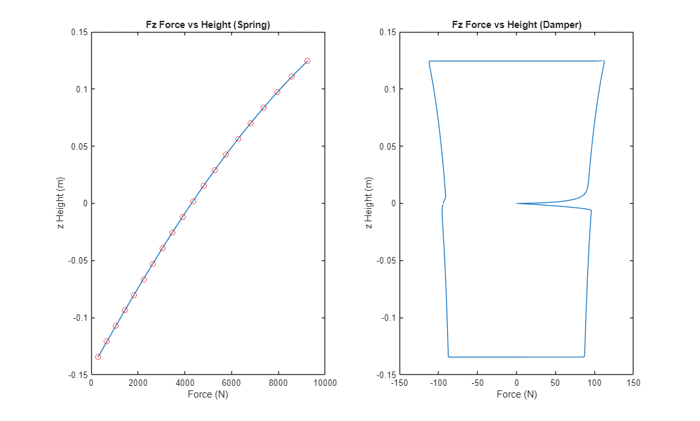
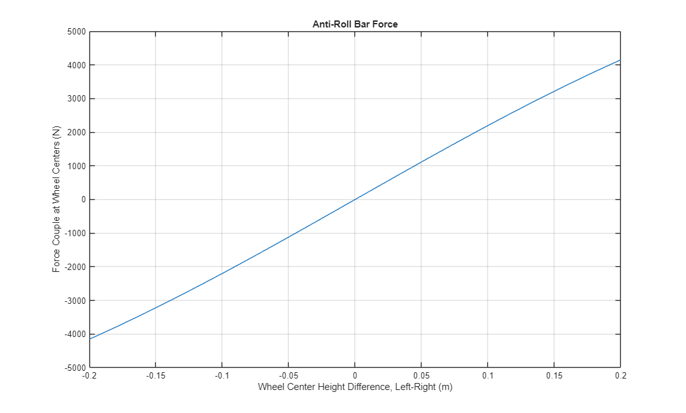
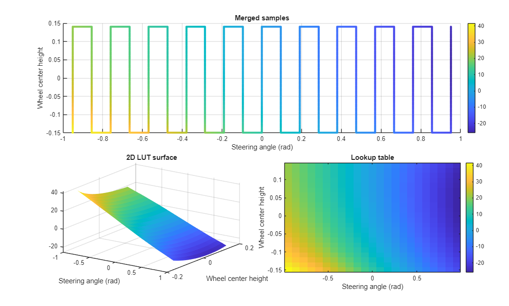
5. Load generated data into Vehicle dataset
In this step, we load the generated lookup tables into the Vehicle data structure so we can test them on a full vehicle. The plots below show the lookup tables.
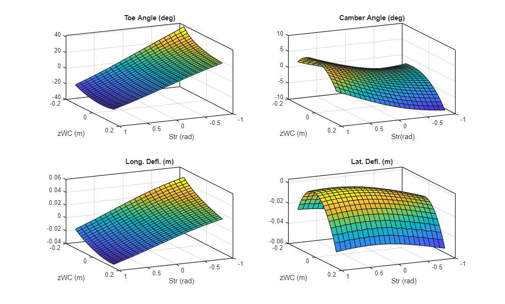
6. Get damping force from LUT suspension for verification (KnC test)
In this step, we test the lookup table suspension with a standard KnC test to obtain the force from the damper. This is obtained to confirm that the lookup table suspension model captures the damping force consistently with the multibody suspension model.
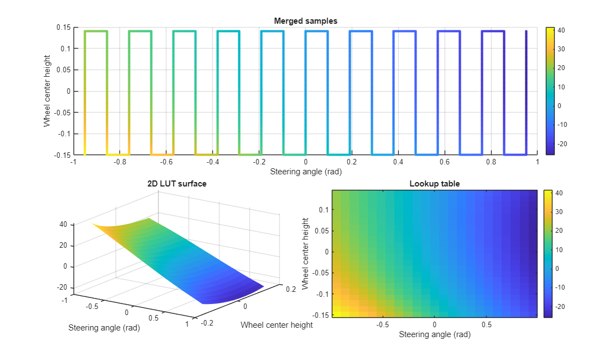
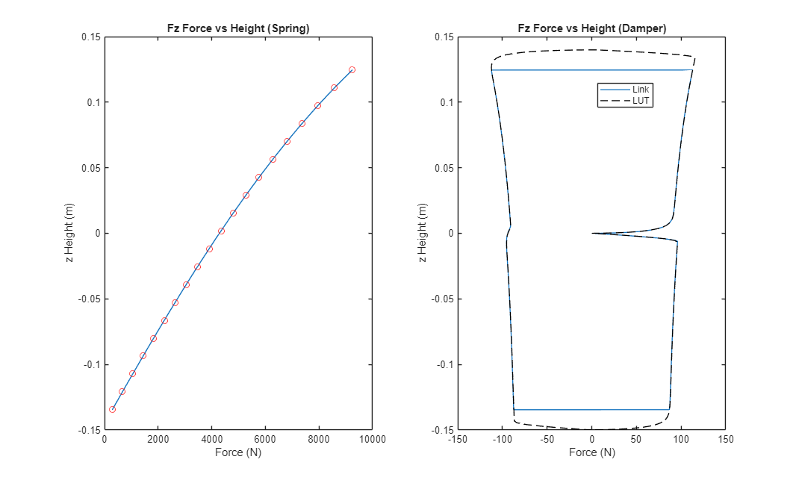
7. Get spring force from LUT suspension for verification (KnC test)
In this step, we test the lookup table suspension with a standard KnC test to obtain the force from the spring. This is obtained to confirm that the lookup table suspension model captures the spring force consistently with the multibody suspension model.
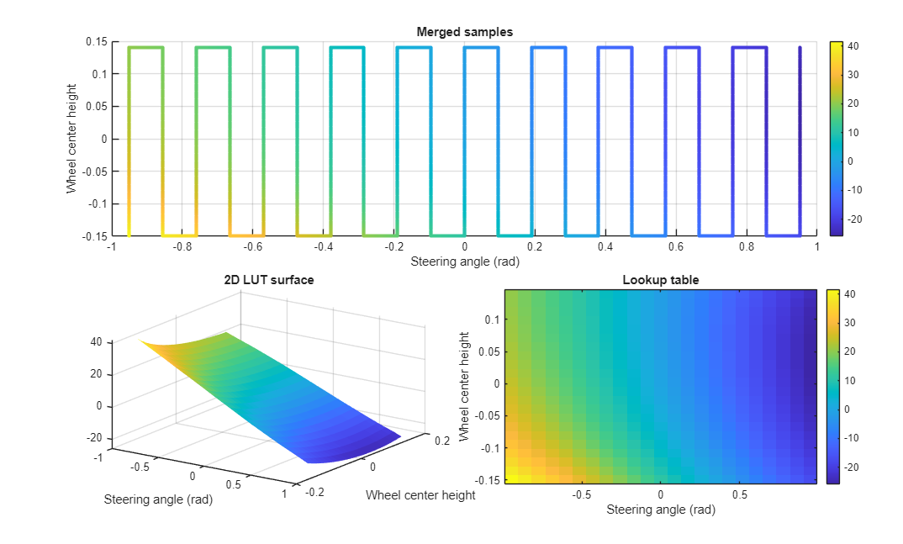
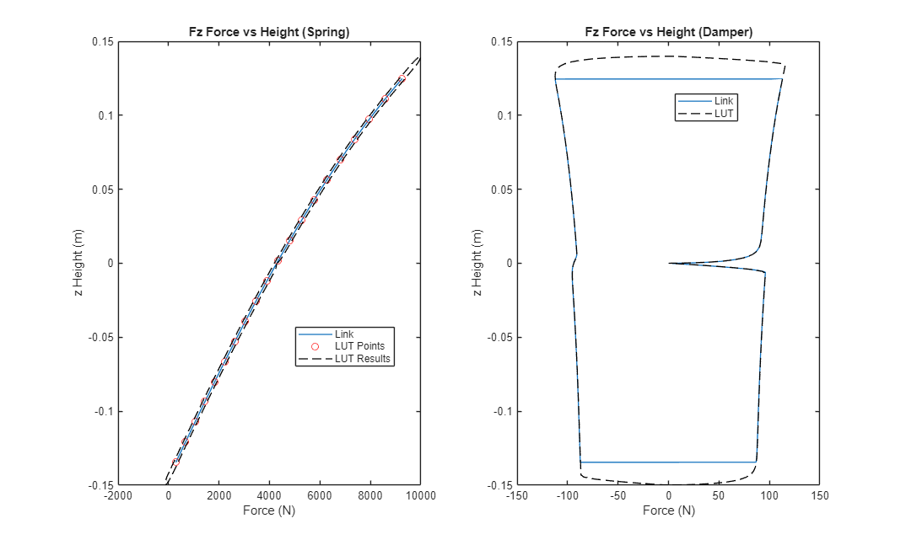
8. Test LUT suspension on front axle of full vehicle
In this step, we test the lookup table suspension in a full vehicle maneuver. Vehicle settings are adjusted to focus the comparison on the front suspension (lookup table vs. multi-link suspension).
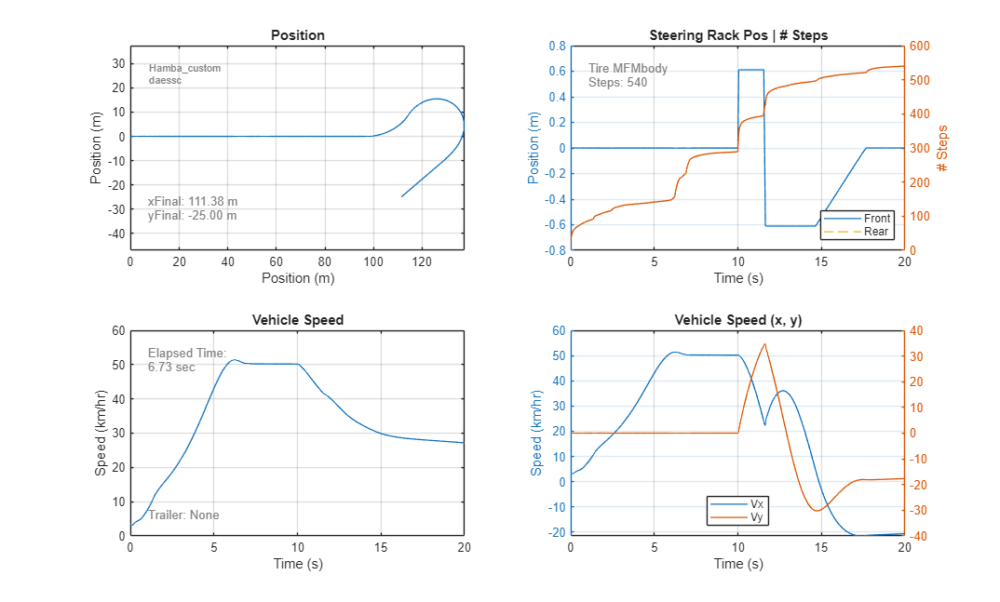
9. Test multi-link suspension on front axle of full vehicle
In this step, we test the multi-link suspension in a full vehicle maneuver. Vehicle settings are adjusted to focus the comparison on the front suspension (lookup table vs. multi-link suspension).
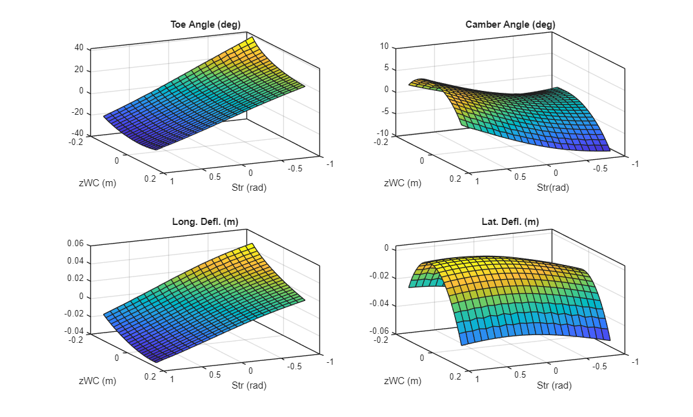
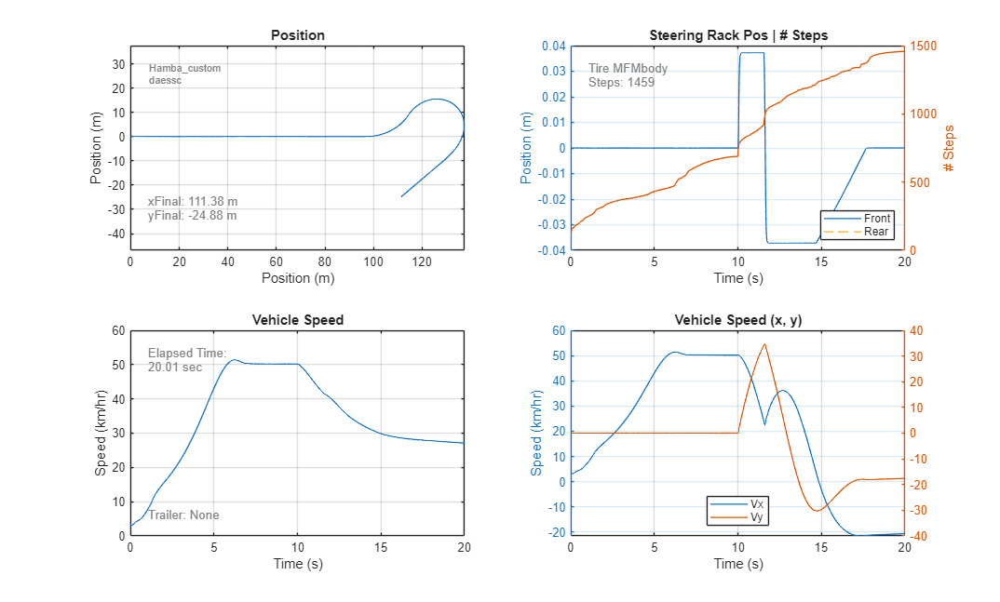
10. Compare results of full vehicle test
In this step, we create plots to see how the suspensions compare.
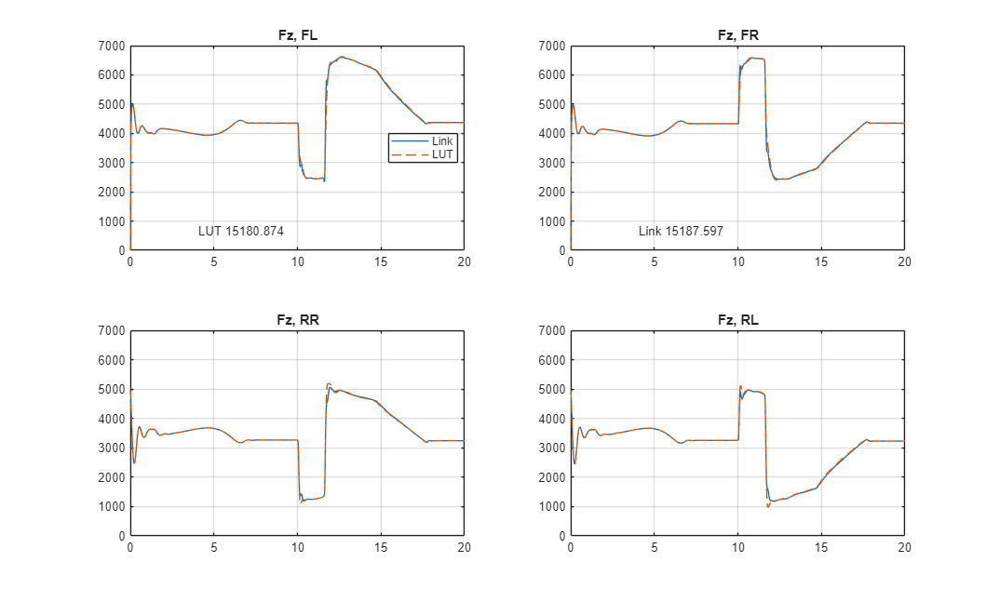
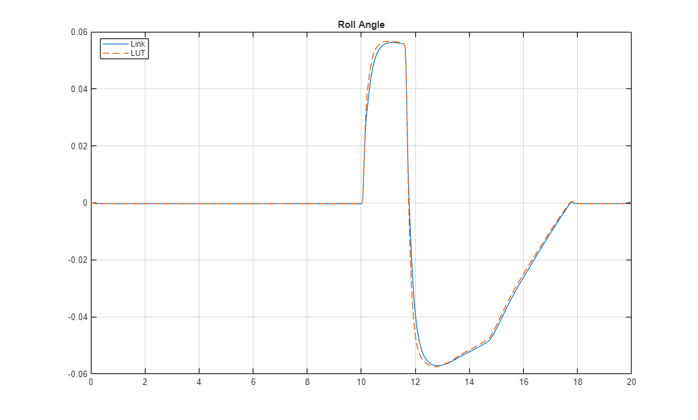
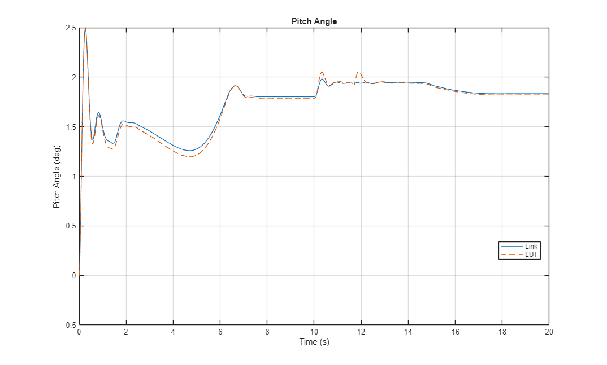